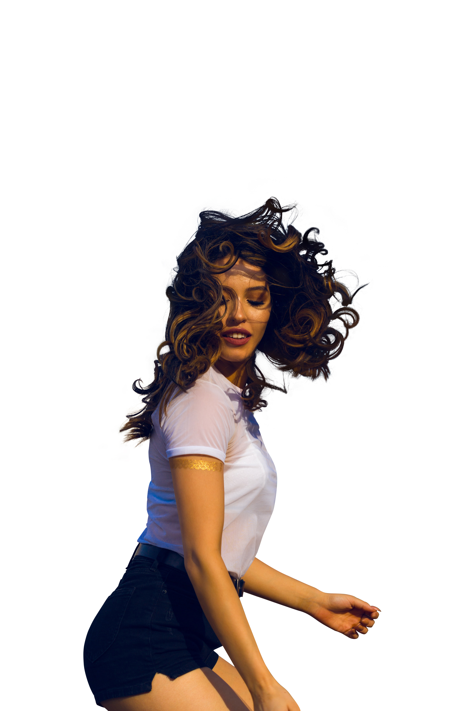
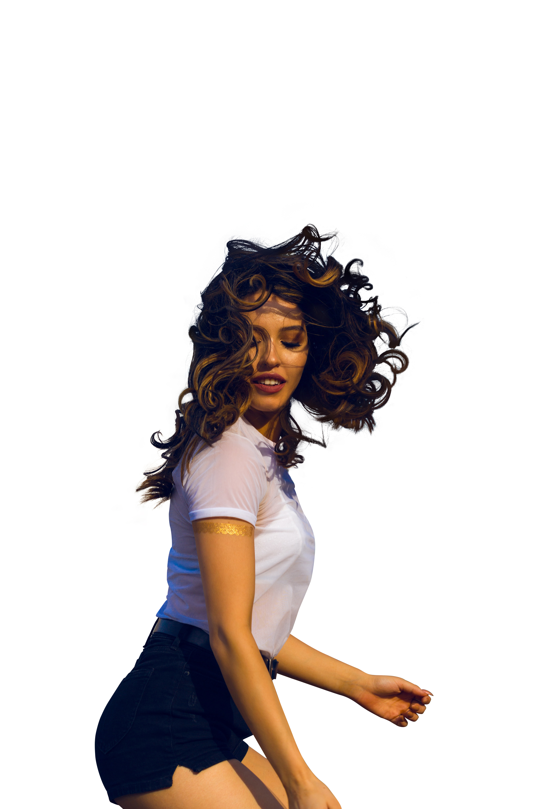

Photo Editing Showcase
Rafic Fekih
High End Photo Retouching Case 1
Average Editing Time: 40 minutes
Enhance overall image quality: Improve sharpness, clarity, and color balance to ensure high-quality
Skin retouching: Smooth out imperfections while maintaining skin texture and avoiding an overly airbrushed look.
Eye and teeth whitening: Brighten eyes and teeth to enhance the model's facial features.
Hair retouching: Refine hair strands, remove flyaways, and ensure a clean and polished appearance.
Clothing adjustments: Remove wrinkles, adjust colors if necessary, and ensure a neat and flattering fit.
Background cleanup: Remove distractions and blemishes from the background while maintaining a natural look.
Consistency: Ensure consistency in style and retouching across all images in the set.


High End Photo Retouching Case 2
Average Editing Time : 25 minutes
Enhance overall image quality: Improve sharpness, clarity, and color balance to ensure high-quality
Skin retouching: Smooth out imperfections while maintaining skin texture and avoiding an overly airbrushed look.
Clothing adjustments: Remove wrinkles, adjust colors if necessary, and ensure a neat and flattering fit.
Background cleanup: Remove distractions and blemishes from the background while maintaining a natural look.
Consistency: Ensure consistency in style and retouching across all images in the set.

High End Photo Retouching Case 3
Average Editing Time 25 minutes
Enhance overall image quality: Improve sharpness, clarity, and color balance to ensure high-quality
Skin retouching: Smooth out imperfections while maintaining skin texture and avoiding an overly airbrushed look.
Hair retouching: Refine hair strands, remove flyaways, and ensure a clean and polished appearance.
Clothing adjustments: Remove wrinkles, adjust colors if necessary, and ensure a neat and flattering fit.
Background cleanup: Remove distractions and blemishes from the background while maintaining a natural look.
Consistency: Ensure consistency in style and retouching across all images in the set.


Photo Retouching Case 4
Average Editing Time 20 minutes
Enhance overall image quality: Improve sharpness, clarity, and color balance to ensure high-quality
Color Correction : Adjusting skin color of hands to match the overall skin color
Skin retouching: Smooth out imperfections while maintaining skin texture and avoiding an overly airbrushed look.
Eye and teeth whitening: Brighten eyes and teeth to enhance the model's facial features.
Hair retouching: Refine hair strands, remove flyaways, and ensure a clean and polished appearance.
Clothing adjustments: Remove wrinkles, adjust colors if necessary, and ensure a neat and flattering fit.
Background cleanup: Remove distractions and blemishes from the background while maintaining a natural look.
Consistency: Ensure consistency in style and retouching across all images in the set.


Phto Editing case 5 Background Removal and Enhancement
Average Editing Time 20 minutes
Background Removal:
-Precisely select and remove the existing background using the pen tool while zooming in 200% for the most accurate selection
White Background Integration:
-Replace the removed background with a pure white backdrop.
-Retain and refine the natural shadows for a realistic and professional look.
Product Retouching:
-Enhance the product by correcting any imperfections, such as blemishes, scratches, or dust.
-Adjust colors, brightness, and contrast for a vibrant and appealing appearance.
Fluidity and Natural Appearance:
-Ensure the product looks natural and fluid against the white background.
-Smooth transitions and refine details to maintain the product's integrity and appeal.
Benefits:
-Clean and Professional Look: Achieve a crisp white background with natural shadows that highlight your product.
-Enhanced Product Quality: Retouching and enhancing the product for a polished and attractive presentation.


Photo Editing Case 6 Editing Service: Object Selection and Implantation
Average Editing Time 25 minutes
Objective: To seamlessly select an object from one image and implant it into another, ensuring a natural and cohesive look. This crucial step ensures that the implanted object looks like a natural part of the new image:
Color Matching: Adjusting the color balance, brightness, and contrast of the object to match the target background.
Lighting and Shadows:Lighting and Shadows: Adding realistic shadows and highlights to mimic the lighting conditions of the background image.
Edge Blending: Smoothing and feathering edges to eliminate any harsh lines or cut-out appearance.
Environmental Effects: Adding any necessary effects, such as reflections, to enhance realism.

Photo Editing Case 7 Editing Service: Object Selection and Implantation
Average Editing Time 25 minutes
I precisely selected the model using the pen tool, then refined the hair mask to ensure a clean, natural look. After that, I changed the background color to better complement the model and performed detailed editing to enhance the overall fluidity and aesthetics, ensuring a polished final image.
 
